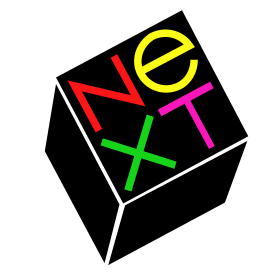

L'histoire d'Apple
Apple, cette multinationale américaine d'informatique,première
entreprise à avoir dépassé les 1000 puis les 2000 milliards de dollars de capitalisation en bourse, qui
a révolutionné le marché de la téléphonie a été étonnement créé dans un garage.
1) Les débuts d'Apple
Dés 1971, Steve Wozniak, Bill Fernandez
et Steve Jobs, les trois co-fondateurs d’Apple, gagnent un peu d’argent grâce à la vente de différents
appareils électroniques comme la Blue Box vendue à
l’époque à environ 200 exemplaires.
Avec cet argent, ils créent Apple I,
le premier ordinateur qui permit de fonder Apple le 1er avril 1976, dans le garage de Steve Jobs à Los
Altos. Elle n’est constituée sous forme de société que l’année suivante le 3 janvier 1977. Le projet de
l’Apple II est alors lancé. Il est mis en vente lors d’un congrès d’informatique à San Francisco et sa
commercialisation fut une réussite et permis de mettre la trésorerie d’Apple dans le positif.
 Apple I, le premier ordinateur d'Apple
Apple I, le premier ordinateur d'Apple
Les années qui suivent ont permis la
rentrée en bourse de la société lors de l’Apple III et le succès fulgurant du Macintosh.
2) Les mauvaises années
En 1985, à cause d’un conflit de pouvoir
et d’une réussite pas totalement complète du Macintosh qui entraîna un licenciement de 20% des employés,
Steve Jobs est éloigné du centre décisionnel et envoyé dans un bureau ironiquement surnommé “Siberia”.
Il quitte alors la compagnie pour fonder lasienne : NeXT.
5 autres employés d’Apple le rejoint.
Après son départ, Apple lance
le Newton qui préfigure la tablette tactile et
un accord avec Sharp leur permet d’en créer une quasi-similaire en échange d’une aide dans la
conception et la production. Ensuite, Apple lance trois nouveaux ordinateurs mais une mauvaise
communication et des produits qui se différencient trop peu en font un désastre et deux des catégories
fusionnent.

Logo de NeXT
Lentement, Microsoft et Intel prennent
de plus en plus de parts dans le marché et une série de mauvaises décisions font chuter la marque qui
licencie alors environ 4000 personnes. Elle cherche alors un nouveau système d’exploitation pour ces
mac et se tourne vers NeXT et son système NeXTSTEP. En 2 ans Steve Jobs devient CEO par intérim ce qui
les incitera à nommer leurs produits avec un i (Jobs était iCEO).
3) La renaissance
Sous la direction de Steve Jobs, Apple
lance l’iMac avec Mac OS X, anciennement NeXTSTEP, et
les Apple Stores en 1998, l’iPod en 2001,
l’iPhone en 2007 et
l’iPad en 2010. Toutes ces créations ont permises à
Apple d’avoir l’image qu’elle à aujourd’hui.
Steve Jobs a quitté son poste de CEO
le 24 août 2011 au profit de Tim Cook et meurt des suites d’un cancer du pancréas dans la nuit du 5
octobre.
Depuis, Apple a racheté plusieurs
entreprises comme Beats music pour créer Apple Music et Siri qu’il influèrent aux iPhones et
iPads.
En avril 2017 s'est terminé le
chantier de l'Apple Park, un gigantesque complexes de locaux comprenant un parc, deux parkings
aériens, 9000 arbres plantés et une couverture électrique en panneau solaire de 17 MWatts.
 Vue aérienne de l'Apple Park en 2019
Vue aérienne de l'Apple Park en 2019
Le 27/11/2021 © HORESNYI Donatien